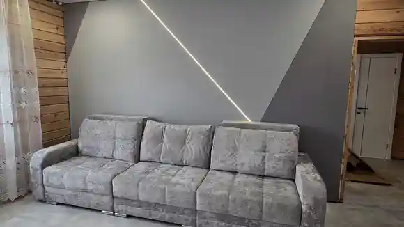
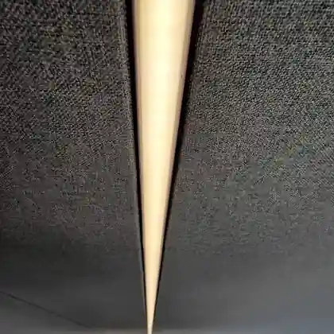

Классическая отделкаМного этапов до готовой стены
Штукатурка→Шпаклёвка→Шлифовка→Грунтовка→Финиш
Мокрые процессыПыль от шлифовкиОжидание между этапами
Натяжные стены и потолки
Без штукатурки и долгой отделки.
Монтаж занимает 1–2 дня. Без шлифовки и строительной пыли. После установки можно заносить мебель.

Как это устроено
По краям стены устанавливаем тонкий профиль и натягиваем в него полотно. Оно закрывает неровности основания и сразу становится готовой поверхностью.
Не нужно штукатурить, шлифовать и ждать, пока высохнут слои отделки.

Сравнение
Чтобы получить ровную стену классическим способом, обычно приходится проходить несколько мокрых и пыльных этапов. Здесь — другой путь.
Реальный объект
Один объект от исходной стены до готового интерьера. Галерея листается сама, но её можно переключать вручную.
Как проходит заказ
Приезжаем, смотрим объект, снимаем размеры и обсуждаем решение.
До начала работ вы знаете стоимость, сроки и условия.
Аккуратная установка без штукатурки.
Принимаете работу — после монтажа можно заносить мебель.
Гарантии и условия
Сроки и гарантийные обязательства фиксируем до начала работ.
Бесплатный замер
Пришлите фото и примерную площадь. Сначала сделаем предварительный расчёт, затем при необходимости приедем на бесплатный замер.
8 996 403-30-63